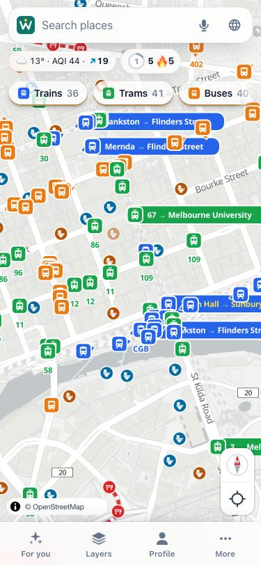
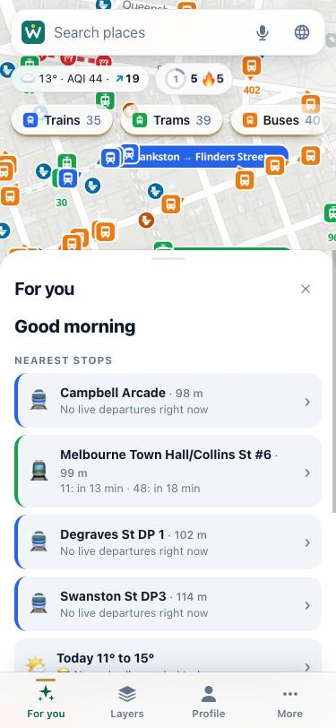
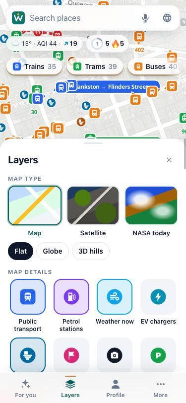

See where your bus, train or tram is right now, plan the trip with the fare, and drive there with turn-by-turn directions, speed limits, fuel prices and the weather on the way.
Open Wayaroo now: free, in your browseriPhone and Android apps: in store review now.
20 languages · English · 中文 · हिन्दी · ਪੰਜਾਬੀ · العربية · Tiếng Việt · and more

Every bus, train, tram and ferry moving on the map, with how late it is, its next stops, and whether it's usually late or full at this time.
Turn-by-turn by car, bike or on foot, with lane arrows, the speed limit, speed humps, level crossings and crash hotspots spoken aloud.
The cheapest fuel within 5 to 30 km for your fuel type, whether the drive is worth it, and whether prices are rising or falling.
Australia's public toilets on the map, with opening hours and accessibility, plus customer toilets in shops and servos.
Every Sydney ferry moving across the harbour, with its route and next wharves, and the next departures at your wharf. Ferries in other cities too.
Rain, wind and dust haze moving on the map, today's forecast and UV, and plain advice on what to wear and whether to take an umbrella.
Wayaroo announces the next stop in your language. If you can't follow the driver, a card asks them in English to tell you when you're there.
Open For you and the closest stops are at the top with the next few departures at each: which route, where it's going, and how many minutes away. Tap one to follow that bus or tram live. Below it, today's weather, your usual places at this time of day, and the cheapest fuel near you.
Riding along, Wayaroo tells you when your stop is next. Turn on Announce every stop and it reads each one out, so you can look out of the window instead of at the screen.

Pick a map type, then tap the layers you want: public transport, petrol stations, the weather now, EV chargers, toilets, hazard reports, cameras, parking and live flights. Everything else stays off, so the map is never cluttered.
Satellite and 3D hills are there when you want them, and NASA's picture of today for a look at the smoke, cloud and snow.

Wayaroo works in your browser today. No download, no account.
Yes. Wayaroo is free to use and needs no account. Your settings stay on your phone.
Melbourne and Victoria (trains, trams and buses), Sydney and New South Wales (trains, metro, buses, ferries and light rail), and hundreds of cities worldwide through the transport operators' own open feeds — trains, trams, buses and ferries.
In New South Wales from the NSW Government's FuelCheck data, and everywhere from prices that Wayaroo drivers share. Victoria's official Servo Saver data is being connected. Wayaroo also shows whether prices in your area are low, rising or falling, so you know when to fill up.
Yes. Turn-by-turn directions with lane arrows, the speed limit, speed humps, level crossings and crash hotspots spoken out loud. Nothing distracting: no ads and no pop-ups while you drive.
English, 中文 (simplified and traditional), हिन्दी, ਪੰਜਾਬੀ, العربية, Tiếng Việt, Ελληνικά, Italiano, Filipino, Español, नेपाली, বাংলা, اردو, தமிழ், 한국어, 日本語, Bahasa Indonesia, Français and Deutsch. Stops are announced in your language too.
Type the word into the search box: petrol station, toilets, coffee, supermarket, chemist, ATM, parking or charger. Wayaroo lists the nearest ones to where the map is. Type a station name, for example Flinders Street Station, and the railway station comes first.
Yes. Type the flight number (QF416, JQ 502) into the search box and Wayaroo shows the plane on the map, where it's coming from and going to, and about when it lands. The card follows the plane while it's open, which is handy when you're picking someone up. Free, from community ADS-B receivers.
Now. Open app.wayaroo.com in the browser of your phone or computer: it is free and needs no account. The iPhone and Android apps are in store review. Email support@wayaroo.com and we will tell you the day they are out.